operanthouseのヘッダー
Kitaya lab
Miniscope recording
Overview
The Operant House has a module to perform in vivo imaging with UCLA miniscope v4. For the temporal synchronization, both software of Operant House and miniscope are run in the Windows computer. We have tested with windows 10 but it should be compatible with Windows11. To remove the cable twisting during the analysis, a slip ring is installed on the roof.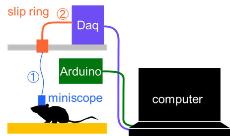
Required materials
- UV-curable adhesive or epoxy-based glue
- HDMI (male) to DisplayPort (male) cable (This is necessary if your computer only supports DisplayPort output)
Slip Ring Assembly
<Wire preparation>
We first create the wiring that connects the Miniscope to the DAQ board via the slip ring (referred to as Cable ①).
Cut a 22 cm segment of COONER WIRE's CW2040-3650 SR coaxial wire.
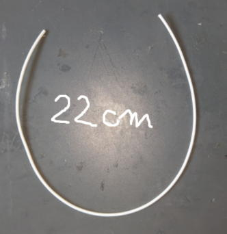
Coaxial cables have a structure in which the negative (ground) wire surrounds the positive (signal) wire, providing electromagnetic shielding.

Strip the outer insulation.
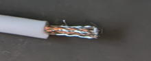
Carefully untwist the shielding fibers (ground).
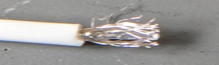
Isolate the inner insulated wire (positive).
Twist and bundle the ground fibers
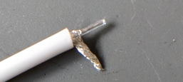
Strip the insulation from the tip of the positive wire using nippers (Make a small scratch and then peel it back).
Magnifying glass or stereomicroscope make this process easier.
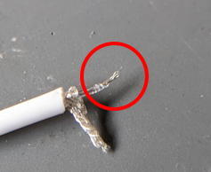
<Soldering the Hirose Connector (Female)>
Using of magnification is strongly recommended for this soldering because it make the process much easier.
Secure the Hirose connector (female) on the table with double-sided tape.
The small pin in the connector circled in red is the positibe terminal.
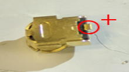
Use the flexible arm to position the cable precisely then perform soldering. After the soldering, test for shorts using a multimater.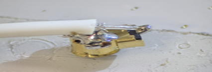
Reinforce the solder joints using UV-curable adhesive or epoxy. Keep the connector face upwards to avoid adhesive leakage into contact points. UV-curing adhensive is recommended because they harden instantly.
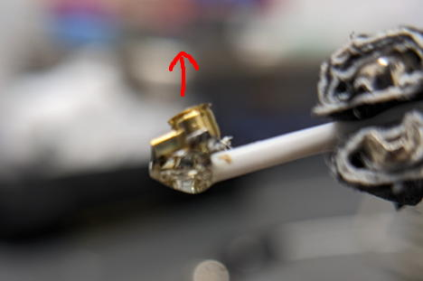
<Preparing the Slip Ring (Adafruit 775)>
The principle of the slip ring is as follows: inside, there is a rotating conductive drum (blue) and electrodes (red) that remain in contact with it. When the drum rotates, the electrodes stay in contact, thereby maintaining the electrical connection.
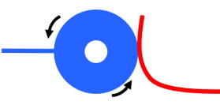
The slip ring to be used is the 775 model (Adafruit Industries). The rotational resistance of it's shaft is too high for use in mouse experiment, threfore we will modify it to ensure smooth rotation.
775 has six lines, and each line is connected by two electrodes, meaning a total of twelve electrodes are rubbing against the drum.
Miniscope only requires two lines and the remaining four lines are unnecessary so we will remove those unnecessary lines.
Cut off any escess length of wiring.
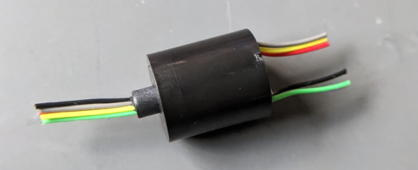
Remove the plastic cover. You should see a gap between the cover and body part (arrows). Insert the nippers into this gap and break the cover apart.
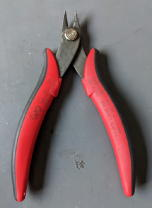 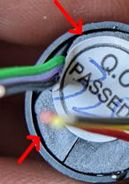

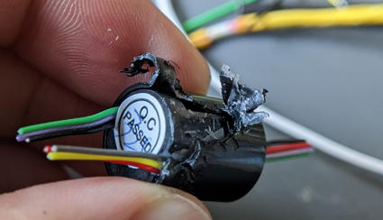
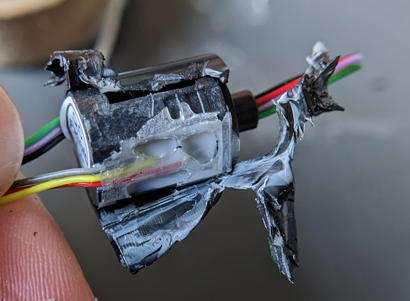
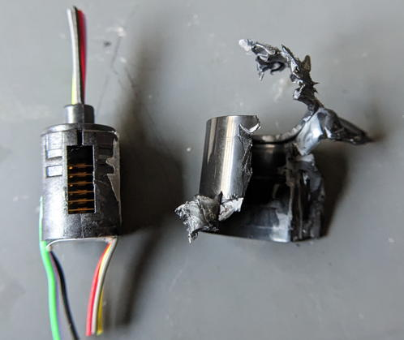
Disassemble the slip ring body. The drum will come off when lifted.
You should see three paris of electrodes standing upright. Each pair corresponds to one line.
Remove the electrode pairs circuled in red.
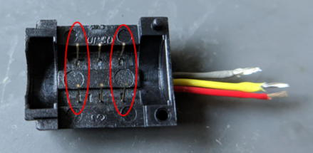
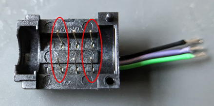
Bend the electrodes outward so they do not touch the drum. Be caful not to touch the center line!
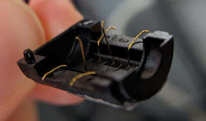
Once the work is complete, reassemble it and secure it with tape.
Check wheter the rotational resistance has decreased enough for the mouse experiment.
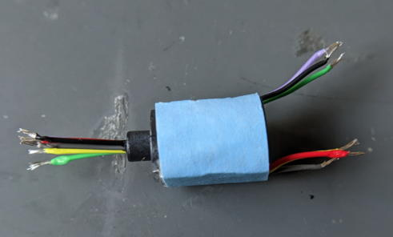
<Connection of the Slip Ring>
Strip the insulations from the other side of the coaxial cable using the same precedure as before to expose them. Then solder it to the slip ring cables. Check that thre is no short circuit.
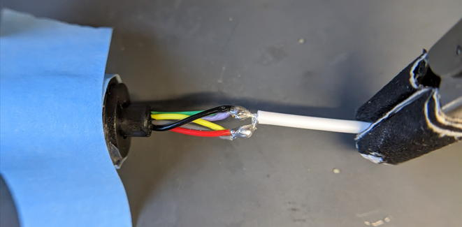
Reinforce the joint part with adhensive.
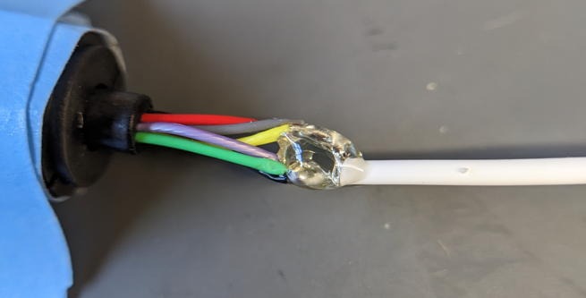
<Cable wiring between Srip Ring and DAQ board>
Cut the coaxial cable to a length of 20 cm and strop both ends.
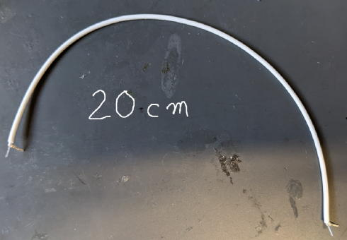
Solder it to the slip ring and reinforce with with adhensive.
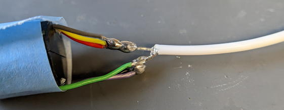
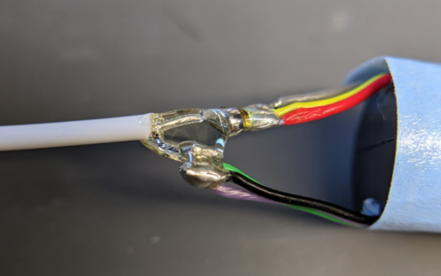
Add 6mm heat shrink tubing to prevent stress from concentrating at this location.
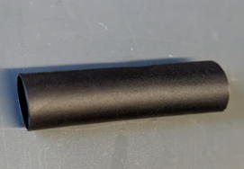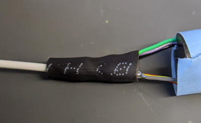
Solder the opposite side of the coaxial cable to the SMA connector. After confirming there is no short, apply adhensive and fit the heat shrink tubing. Since the heat shrink tubing cannot be inserted after soldering, thread it into the wire beforehand.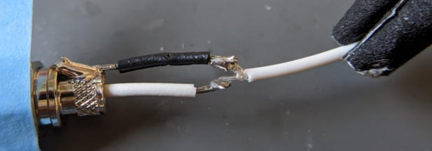

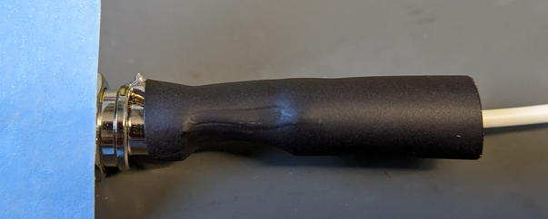
Once the Hirose connector is connected to your miniscope, the slip ring preparation is complete.
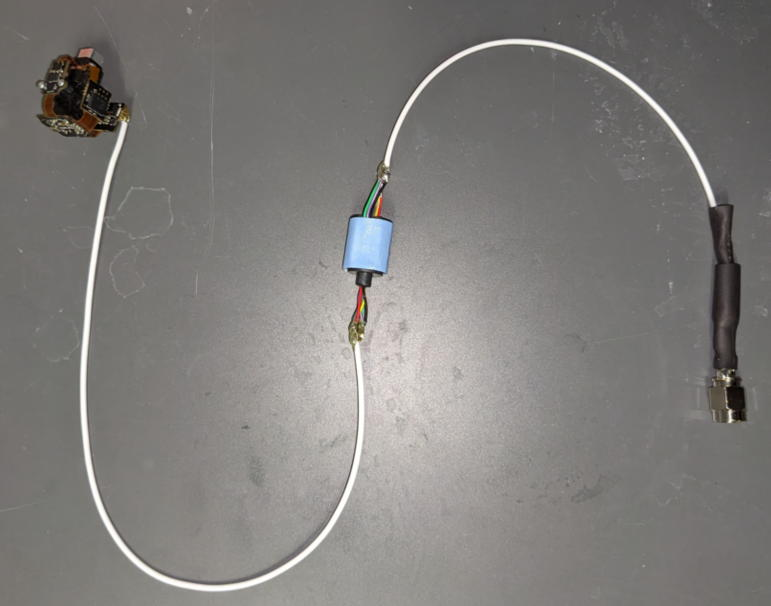
【Fabrication of holders for slip ring and DAQ board】
Find the STL file in the Option parts/Miniscope folder and print them.
- Commutator holder.stl
- DAQ holder.stl
Left: slip ring adapter. Right: DAQ holder.
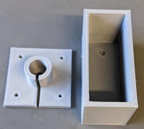
Attach these slots to the OperantHouse lid. The locations varies depend on the nosepoke detection setting.
[When using camera for the touch detection (Default)]
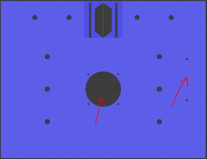
[When using IR sensor bar for the touch detection]
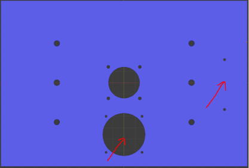
Here, I will explain with the lid for the IR sensor bar setting.
Fit the slip ring into the adapter.
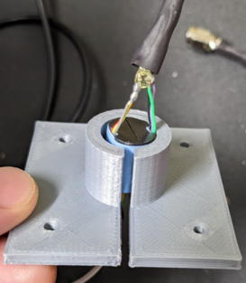
Secure the slir ring adapter and DAQ holder with 2mm short screws.
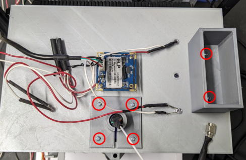
Fit the DAQ board.

【Windows PC preparation and connection】
Prepare the Windows PC (Higher performance is better).
Download the Distribution Installer from the Anaconda website (https://www.anaconda.com/download) and install it.
Since Operant House requires several plugins to be installed, set up a virtual environment to avoid contaminating your original Python installation.
[Set up the python virtual environment]
Launch the Anaconda Prompt.
Type the following to create a virtual environment named OperaEnv.
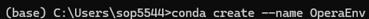
Turn on the environment you created.
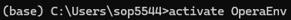
This will make OperaEnv the default environment for running Python program. This virtual environment data would be stored in
C:/Users/[user name]/.conda/envs
Next, install the plugins.
Install OpenCV for capturing the USB camera.
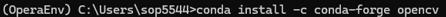
Install pyserial for serial communication with the Arduino.
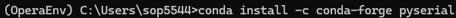
Install win32api.
[Modify the code of the Operan House]
The next step will change the code Operant House code for computer use. Open the Operant House code in Notepad and set the value of RaspberryMode in general setting to 0.
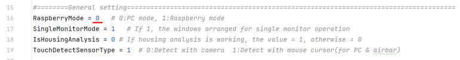
To change the operation computer from the Raspberry Pi to the Windows PC, disconnect the USB connection between Arduino-Raspberry Pi and connect between Arduino-Windows PC. Also connect the USB camera to the Windows PC. If you are using an infrared sensor board, connect that to the PC as well.
Next, check which port your PC recognized the Arduino on. Open Device Manager from the Control Panel.
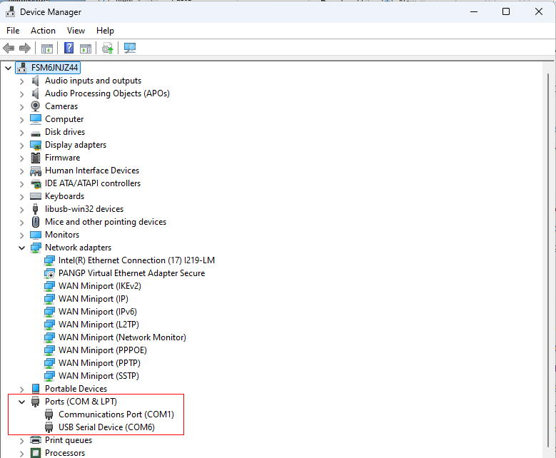
The port numbers are hilighted in red. The USB Serial Device (COM6) listed here is your Arduino. If you're unsure which one it is, unplug the USB cable from your Arduino and see which number disappers. This number can varied depend on your computer.
Next, check the port number configured in Operant House. In this example, the port number is set to COM3.
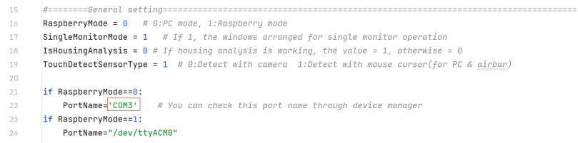
Fix the number from COM3 to COM6 to make the Operant House program to recognize the Arduino connected.
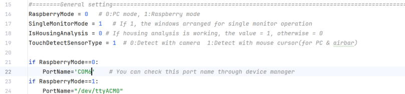
If you are using a laptop computer with a built-in camera, deactivate it in Device Manager.
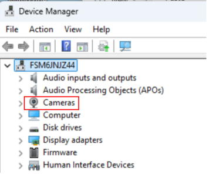
[Configuration of the miniscope capturing software]
In this recording, Miniscope software does not need to capture the behavior camera, you must modify the configure file to turn off the behavior camera capturing on the Miniscope softwre.
Open the Miniscope config file (UserConfigExample-V4-Miniscope-plus-WebCam.json) in notepad and delete the cameras section highlighted in red.
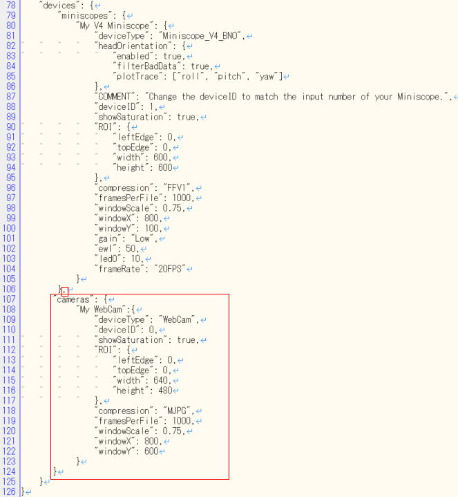
After deletion, it should look like this.

All prepartaions are now complete.
<Launch of the software for the experiment>
Launch the Anaconda.
Activate OperaEnv in Anaconda, then use cd command to change the current directly to the Operant House folder (the path varied by environment).
Next use the python command to execute the Operant House code (the python file name in the following example can be different from your case because this file name will change by version up).

Once Operant House proram is running, launch the Miniscope software and check if Miniscope images are captured without frame drop (Frame drops at the launch of the program can be ignored).
<If the captured image is not displayed>
The camera ID setting may be incorrect (currently, Operant House's camera is set to 0 and Miniscope's camera ID is set to 1). Swap the camera IDs using the following procedure.
Change the ID of behavior camera in Operant House's source code to 1. 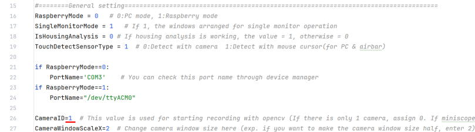
Change the camera ID of the miniscope in the miniscope config file to "0".
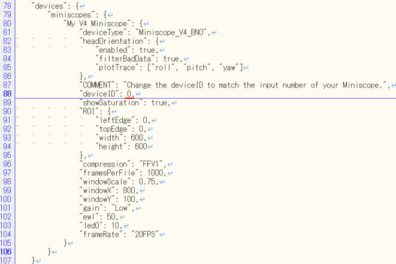
The camera ID assignments are generally consistent for the same connection pattern, but there is still a chance they change. If issue occur, try swapping the camera ID by theway showen here.
If the captures work with both software and Operant House software runs at 30 fps and there is no increase in frame drops after startup, the recording is ready.
Start capturing with Miniscope, then click the start button on the Operant House software to start the task manually (Don't forget to set save folder path before this). Both software use the same Windows clock for their timestamps, so synchronization via TTL signal is not necessary.
【Infrared Sensor Bar Reference (Only if using the infrared sensor bar)】
If you are detecting panel touch with a camera, please skip this section.This explanation assumes that you already have experience using an infrared sensor bar with a Raspberry Pi. If you do not have such experience, please read About Option Part→ Miniscope IR Sensor Bar in the left menu beforehand.
Connect the monitor (for panel display), Arduino, ceiling camera and infrared sensor bar to the Windows computer.
Right-click on the blank desktop to open Display settings and set the touch monitor as an extended display to the right of the main monitor.
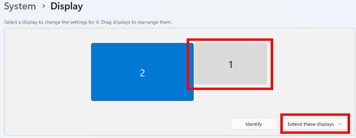
Basically, we can use IR sensor bar in the same manner as we use it with Raspberry Pi, howver, on Windows11, the mouse pointer moves within the area on the right side of the computer's main screen by unkown reason. This area will be reffered as "Sensor bar area".
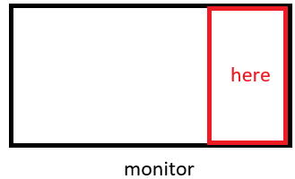
As it stands, the subject animal can touch the Windows taskbar through the IR sensor bar and can cause a trouble. To prevent this, move the taskbar to the left side of the screen. Unfortunately, Windows11 does not have the function to move it by default so download StartAllBack in the Microsoft Store to change the interface of Windows 11 to Windows 10 style layout in which taskbar is movable.
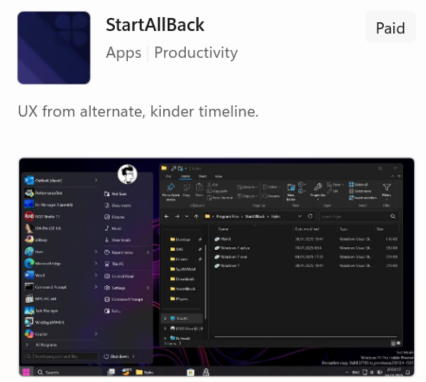
After installation, the desktop should immediately switch to a Windows 10-style appearance.
You'll see the start button on the left after the installation.
Then right-click the taskbar and select Properties.
Set taskbar location on screen to Left.
The taskbar should be located on the left. Please note that StartAllBack can be used free for the first 100 days, but after that it requires a paid license (As of September 22 2025, it is available as a one-time purchase for $7).
If the taskbar is displayed on the touch monitor, right-click the taskbar to open Taskbar settings → Taskbar behaviors and uncheck the Show my taskbar on alldisplays to remove it in the touch monitor.
The infrared sensor bar is recognized by Windows as a Pen/Touch device. Because of this, a long press is interpreted as a right-click and mouse can touch the right-click menu. To avoid this, let's desable this feature.
Open Control Panel→Pen and Touch, select Press and hold, click Settings, and uncheck Enable press and hold for right-clicking.
(The Pen and Touch will appear only when the IR sensor bar is connected)
Next, cover the sensor bar area with touch window. This prevents a deactivation the touch windows that cause stopping of the tracking of the mouse corsor position by the Operant House program by panel touching of the subject animal.
Please look to the General setting section in the Operant House code.
If you set the OperationMonitorWidthvalue smaller than the actual computer's monitor size, the touch window will move to the left and extend beyond the Operation monitor as below desktop screen shot. Increasing the OperationMonitorHeightvalue will extend the touch window downward. Adjust these values so that the touch window fully covers the Sensor bar area.
When the touch window shifts to the left, it would leave empty space on the right side of the touch monitor. To cover this gap, increase the value of TouchMonitorWidth.
Once you have completed these steps, the desktop should appear as shown below.
Next, calibrate the touch point reference. As this stage, the orange dot does not appear under your finger when you touch the monitor due to different coordinate system between Windows and the Raspberry Pi. To fix it, launch Operant House software and click the Setting button on the left of the Main window. Adjust the parameters indicated by the red rectangle. The adjustment method is the same as described in About Optional Parts → IR Sensor Barin the left menu when using Raspberry Pi.
I recommend to change TouchOffsets first to shift the orange dot. Increasing the X and Y values move the dot to the right and upward, respectively. When the dot appears in the touch window, adjust TouchRatio. If the dot moves faster than your finger when your finger moves on the monitor surface, lower the TouchRatio ratio and vise visa.
When the dot follows your finger precisely, the adjustment is complete.
Finally, adjust the panel positions on each task. The procedure is the same as on the Raspberry Pi (see the Handling of OperantHouse in the left menu).
Once the panel alignment is finished, the infrared sensor bar calibration is complete.